|
|
|
|
|
|
|
|
This example describes how to use indirect addressing for the setup and operation of three different pumps at a pump station.
The following single panel displays each pump and its specific values for energy consumption, motor temperature, and pressure exerted. The buttons at the top of the panel are used to switch between Pump 1, Pump 2, and Pump 3.
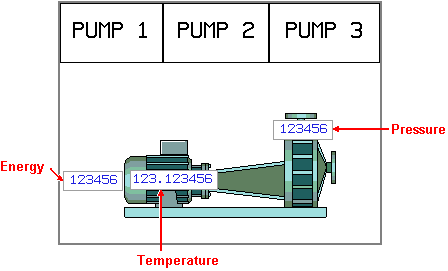
To design this example application, you will:
Set up three variables—Energy, Pressure, and Temperature.
Associate all three variables with each pump—Pump 1, Pump 2, and Pump 3.
Assign the values for each variable to consecutive addresses on the equipment.
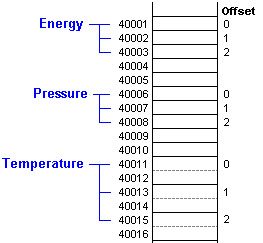
This example uses a folder variable to group the variables for each pump.
Create a new folder and name it Pump.
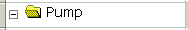
Add INT variables to the folder and name them Energy and Pressure. Add a DINT variable to the folder and name it Temperature.
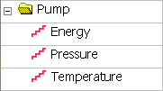
Assign a device address to each element: Energy = 40001, Pressure = 40006, Temperature = 40011.
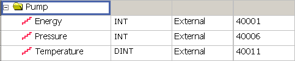
Data Length of each element is: Energy = 16 bits, Pressure = 16 bits, Temperature = 32 bits.
Location of data = Device Address + Variable data length x Offset
Create the offset variable, which in this example is an internal variable called OffsetVar.
In each of the folder's elements, Energy, Pressure, and temperatures, define the Indirect Address as the variable OffsetVar. For more information on defined Indirect Address, see Section 6.3.3.1, Setting Up an Indirect Address.

Make sure the variable properties such as Data Format, Signed, and Data Length in each variable match the settings in the equipment.
Create a panel and name it PumpPanel.
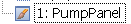
Draw three switches on the panel.
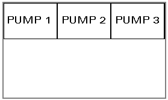
For each switch, double-click to open the Switch Settings dialog box, then add a word operation that changes the value of the offset variable OffsetVar.
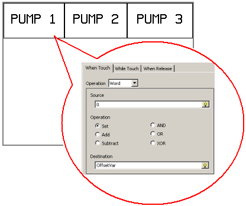
Set the Source and Destination properties as follows:
PUMP 1 Switch: Source = 0; Destination = OffsetVar
PUMP 2 Switch: Source = 1; Destination = OffsetVar
PUMP 3 Switch: Source = 2; Destination = OffsetVar
On the same panel as the switches, draw a pump and add three Numeric Display parts to it.
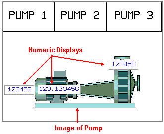
In the Numeric Display Settings dialog box for each numeric display part, specify the appropriate variable for the part—Pump.Energy, Pump.Pressure, or Pump.Temperature.
For each numeric display, set the Display Digits property as follows:
Pump.Energy Variable: Display Digits = 6.0.
Pump.Pressure Variable: Display Digits = 6.0.
Pump.Temperature Variable: Display Digits = 3.6.
Build the application and download it to the target machine.
Press the Pump 1 switch to change the OffsetVar to 0.
The numeric display parts display the values in addresses 40001 (Energy), 40006 (Pressure), and 40011 (Temperature).
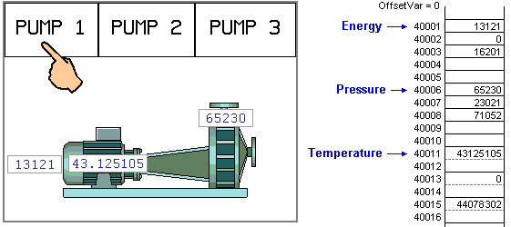
Press the Pump 3 switch to change the OffsetVar to 2.
The numeric display parts now display the values in addresses 40003 (Energy), 40008 (Pressure), and 40015 (Temperature).
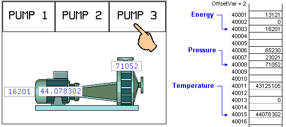
In this example of a 3-pump station, by using indirect variables:
We used only one panel, instead of three panels (one for each pump).
We used only 1 set of three variables, instead of nine variables (three different measurements for each of three pumps).
This is just one example that demonstrates how indirect variables can simplify your HMI applications.